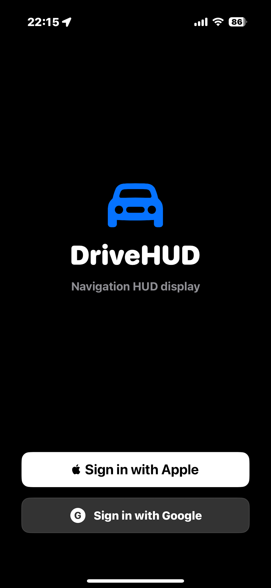
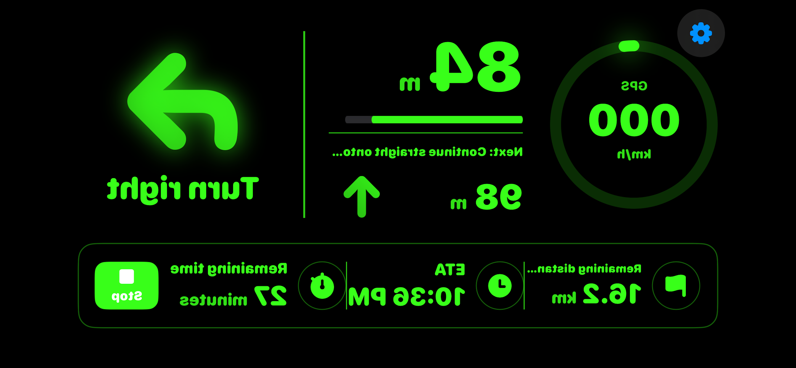
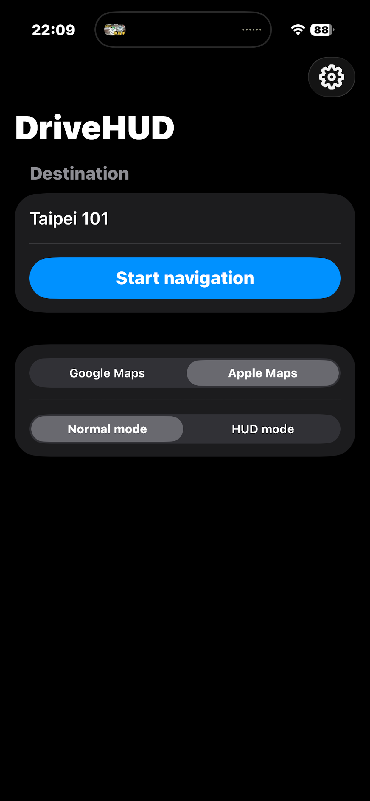
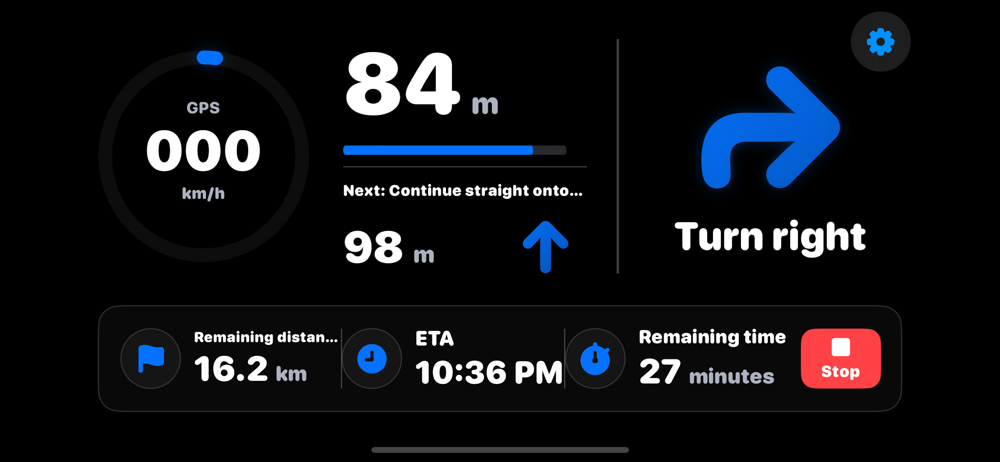

DriveHUD 是專為駕駛設計的抬頭顯示導航應用程式。將手機放在儀表板，透過擋風玻璃反射，導航資訊清晰呈現在你的視線前方，讓你雙眼不離路面，行車更安全。



使用方式
直接輸入地址或地點名稱，或從 Google Maps、Apple Maps 分享目的地
選擇 Google 地圖路線服務或 Apple 地圖，依需求自由切換
將手機固定於儀表板，螢幕朝向擋風玻璃方向
啟用 HUD 模式，畫面鏡像翻轉，對準擋風玻璃反射即可使用
主要功能
鏡像翻轉畫面，配合擋風玻璃反射顯示導航資訊，視線不必離開路面。
支援 Google 地圖路線服務與 Apple 地圖，一個 App 兩種選擇。
清晰顯示下一個路口的方向與距離，以及接下來的路況預告。
即時顯示目前行車速度，輔助安全行駛。
從 Google Maps 或 Apple Maps 分享目的地，自動跳回並開始導航，無需重新輸入。
偏離路線時自動重新計算最佳路徑，確保你永遠走在正確方向。
支援繁體中文、English、日本語、한국어、ภาษาไทย，自動偵測系統語言。
輸入地址或地點名稱快速搜尋，距離排序讓你輕鬆選擇正確地點。
兩種顯示模式
水平鏡像翻轉，導航資訊透過擋風玻璃反射到視線前方。綠色螢光配色在黑暗中格外清晰。
跟隨系統深色/淺色外觀，介面清晰直覺。適合直接看螢幕或讓副駕駛確認路線。

DriveHUD 免費提供，部分用戶版本包含廣告。廣告收入用於支持應用程式持續開發與維護，讓更多功能得以免費提供給所有用戶。
立即體驗
Apple Maps 導航無需帳號即可免費使用
在 App Store 下載 免費 · iPhone · iOS 17+DriveHUD is a heads-up display navigation app designed for drivers. Place your phone on the dashboard — navigation info reflects off your windshield and right into your line of sight, so you never have to look away from the road.
How it works
Type an address or place name, or share a destination from Google Maps or Apple Maps
Select Google Maps Routes or Apple Maps — switch freely anytime
Place your phone on the dashboard with the screen facing the windshield
Tap HUD mode — the display mirrors horizontally and reflects onto your windshield
Features
Mirrors the screen horizontally so navigation reflects off your windshield into your line of sight.
Google Maps Routes API and Apple Maps — two providers, one app.
Clear display of the next maneuver, distance, and an upcoming step preview.
Live GPS speed readout to help you stay aware of your current speed.
Share a place from Google Maps or Apple Maps — DriveHUD launches automatically with the destination filled in.
When you go off-route, DriveHUD recalculates the best path automatically.
Supports Traditional Chinese, English, 日本語, 한국어, and ภาษาไทย — auto-detects system language.
Search by address or place name with distance-sorted results for easy selection.
Two display modes
Horizontally mirrored for windshield reflection. Neon green on black — clearly visible at night and in low light.
Follows your system light/dark appearance. Clean and intuitive — great for direct viewing or a passenger checking the route.
DriveHUD is free to use. Some users see ads — ad revenue supports ongoing development and keeps core features free for everyone.
Get started
Apple Maps navigation is free — no account required
Download on App Store Free · iPhone · iOS 17+DriveHUD はドライバーのために設計されたヘッドアップディスプレイナビゲーションアプリです。スマホをダッシュボードに置くだけで、ナビ情報がフロントガラスに反射し、視線を外さずに運転できます。
使い方
住所や場所名を入力するか、Google マップ・Apple マップから目的地をシェア
Google マップルート or Apple マップ — いつでも切り替え可能
ダッシュボードにスマホを固定し、画面をフロントガラスに向ける
HUDモードをオンにすると画面が左右反転され、フロントガラスに反射して表示
主な機能
画面を左右反転し、フロントガラスへの反射でナビ情報を視線前方に表示。
Google マップルートサービスと Apple マップの両方に対応。1つのアプリで2つの選択肢。
次の交差点の方向・距離、および次のステップのプレビューを明確に表示。
現在の走行速度をリアルタイム表示し、安全運転をサポート。
Google マップや Apple マップからシェアするだけで、自動的にDriveHUDが起動し目的地をセット。
ルートを外れた際に最適なルートを自動再計算。迷わず目的地へ。
繁体字中国語・英語・日本語・韓国語・タイ語に対応。システム言語を自動検出。
住所や場所名で検索、距離順のリストで簡単に正しい場所を選択。
2つの表示モード
水平反転でフロントガラスに投影。暗闇でもはっきり見えるネオングリーン配色で、夜間ドライブに最適。
システムのダーク/ライトモードに対応。直接画面を見る場合や、助手席からルート確認する際に便利。
DriveHUD は無料でご利用いただけます。一部のユーザー向けバージョンには広告が含まれます。広告収益はアプリの継続的な開発・維持に使われ、すべてのユーザーに機能を無料で提供し続けるために役立てられます。
今すぐ始める
Apple マップナビはアカウント不要で無料利用可能
App Store でダウンロード 無料 · iPhone · iOS 17+DriveHUD는 운전자를 위해 설계된 헤드업 디스플레이 내비게이션 앱입니다. 스마트폰을 대시보드에 올려놓으면 내비게이션 정보가 앞유리에 반사되어 시선을 도로에서 떼지 않아도 됩니다.
사용 방법
주소나 장소명을 입력하거나 Google 지도·Apple 지도에서 목적지 공유
Google 지도 경로 서비스 또는 Apple 지도 — 언제든지 자유롭게 전환 가능
대시보드에 스마트폰을 고정하고 화면을 앞유리 방향으로 배치
HUD 모드를 켜면 화면이 좌우 반전되어 앞유리에 반사되어 표시
주요 기능
화면을 좌우 반전하여 앞유리 반사로 내비게이션 정보를 시선 앞에 표시.
Google 지도 경로 서비스와 Apple 지도를 모두 지원. 하나의 앱에서 두 가지 선택.
다음 교차로의 방향과 거리, 그 다음 경로 미리보기를 명확하게 표시.
현재 주행 속도를 실시간으로 표시하여 안전 운전을 지원.
Google 지도나 Apple 지도에서 장소를 공유하면 DriveHUD가 자동으로 실행되고 목적지가 설정.
경로를 벗어났을 때 최적 경로를 자동으로 재계산.
繁體中文·English·日本語·한국어·ภาษาไทย 지원, 시스템 언어 자동 감지.
주소나 장소명으로 검색, 거리순 정렬로 올바른 장소를 쉽게 선택.
두 가지 디스플레이 모드
좌우 반전으로 앞유리에 투영. 야간에도 선명하게 보이는 네온 그린 배색.
시스템 다크/라이트 모드에 따라 변경. 직접 화면을 보거나 동승자가 경로를 확인할 때 편리.
DriveHUD는 무료로 제공됩니다. 일부 사용자 버전에는 광고가 포함됩니다. 광고 수익은 앱의 지속적인 개발과 유지를 지원하며, 모든 사용자에게 무료로 기능을 제공하는 데 사용됩니다.
지금 시작하기
Apple 지도 내비게이션은 계정 없이 무료 사용 가능
App Store에서 다운로드 무료 · iPhone · iOS 17+DriveHUD คือแอปนำทางแบบ Head-Up Display ที่ออกแบบมาสำหรับผู้ขับขี่ วางสมาร์ทโฟนบนแดชบอร์ด ข้อมูลนำทางจะสะท้อนบนกระจกหน้ารถ ให้สายตาของคุณอยู่บนถนนตลอดเวลา
วิธีใช้งาน
พิมพ์ที่อยู่หรือชื่อสถานที่ หรือแชร์ปลายทางจาก Google Maps หรือ Apple Maps
Google Maps Routes หรือ Apple Maps — สลับได้อิสระตลอดเวลา
ติดสมาร์ทโฟนบนแดชบอร์ด โดยให้หน้าจอหันไปทางกระจกหน้ารถ
เปิดโหมด HUD หน้าจอจะพลิกซ้าย-ขวา และสะท้อนบนกระจกหน้ารถ
ฟีเจอร์หลัก
พลิกหน้าจอแนวนอนเพื่อสะท้อนข้อมูลนำทางบนกระจกหน้ารถ ไม่ต้องละสายตาจากถนน
รองรับทั้ง Google Maps Routes API และ Apple Maps — สองตัวเลือก แอปเดียว
แสดงทิศทางและระยะทางของจุดเลี้ยวถัดไปอย่างชัดเจน พร้อมตัวอย่างเส้นทางต่อไป
แสดงความเร็วปัจจุบันแบบเรียลไทม์ ช่วยให้ขับรถได้อย่างปลอดภัย
แชร์สถานที่จาก Google Maps หรือ Apple Maps — DriveHUD เปิดอัตโนมัติพร้อมปลายทาง
เมื่อออกนอกเส้นทาง ระบบจะคำนวณเส้นทางที่ดีที่สุดใหม่โดยอัตโนมัติ
繁體中文·English·日本語·한국어·ภาษาไทย ตรวจจับภาษาระบบอัตโนมัติ
ค้นหาด้วยที่อยู่หรือชื่อสถานที่ เรียงตามระยะทางเพื่อเลือกสถานที่ที่ถูกต้องได้ง่าย
สองโหมดการแสดงผล
พลิกหน้าจอแนวนอนเพื่อฉายบนกระจกหน้า สีเขียวนีออนบนพื้นดำ มองเห็นชัดในความมืด
ตามโหมดมืด/สว่างของระบบ อินเทอร์เฟซชัดเจน เหมาะสำหรับดูหน้าจอโดยตรง
DriveHUD ให้บริการฟรี บางเวอร์ชันมีโฆษณา รายได้จากโฆษณาใช้สนับสนุนการพัฒนาและบำรุงรักษาแอปอย่างต่อเนื่อง เพื่อให้ฟีเจอร์หลักยังคงฟรีสำหรับทุกคน
เริ่มต้นเลย
นำทางด้วย Apple Maps ใช้ฟรี ไม่ต้องสร้างบัญชี
ดาวน์โหลดบน App Store ฟรี · iPhone · iOS 17+